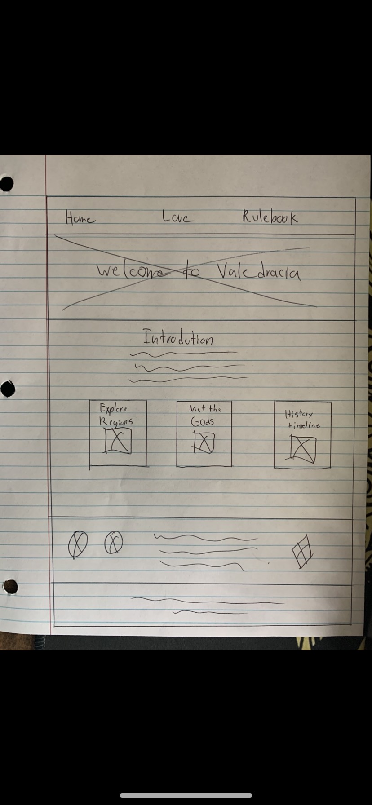
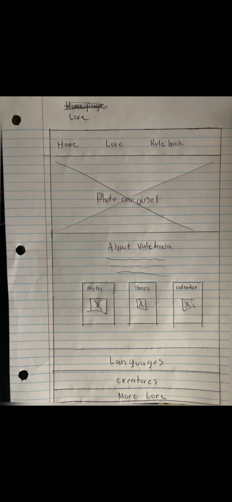

Overview
Purpose
This website will serve as a hub for a world called Valedracia, a richly detailed fantasy world used for storytelling, games, and creative writing. It will provide visitors with lore, maps, factions, key characters, and history of the world.
Audience
My site is designed for table top game players, authors, and gamers who are interested in immersive worldbuilding. It caters to mainly my friends and I. It is a universes and will be used for material in campaigns or inspiration for other things.
Dynamic elements
I will have a Theme Toggle (Light/Dark Mode): A button in the header will allow users to switch between light and dark display themes. Dynamically Generated Cards: Sections like "Meet the Gods", etc will load dynamically using JavaScript. Expandable Lore Sections: On the Lore page, clicking on elements like “Languages,” “Creatures,” or “More Lore” will expand or collapse hidden content. Filtered Lore Display:Users will be able to filter the type of lore they see (e.g., just myths or just creatures). Lore Spotlight Carousel (Home Page): A rotating spotlight area on the homepage will automatically or manually cycle through featured lore elements. Responsive Navigation Toggle:For mobile users, a hamburger menu will allow them to open or close the navigation.
Branding
Website Logo

Style Guide
Color Palette
Palette URL: https://coolors.co/3b0d52-e3c4ff-1b1b1b-f0f0f0| Primary | Secondary | Accent 1 | Accent 2 |
|---|---|---|---|
| #3B0D52 | #E3C4FF | #1B1B1B | #F0F0F0 |
Typography
Heading Font: Cinzel
Paragraph Font: Open Sans
Normal paragraph example
Welcome to Valedracia. This page introduces the world’s purpose, its creation myths, major gods, and a brief timeline. It includes links to explore regions, characters, and magical elements.
Colored paragraph example
This page will explore the major powers and organizations in Valedracia—such as the Nocturnal Hand, Emberblades, and the Seers of the Rift. It will feature cards or expandable sections powered by JS, showing each faction's banner, role, and alignment.
Navigation
Content
Home page
Welcome to Valedracia. This page introduces the world’s purpose, its creation myths, major gods, and a brief timeline. It includes links to explore regions, characters, and magical elements.
Lore
This page will explore the major powers and organizations in Valedracia—such as the Nocturnal Hand, Emberblades, and the Seers of the Rift. It will feature cards or expandable sections powered by JS, showing each faction's banner, role, and alignment.
Wireframes
Create two wireframes for your site. One for each page and list them here
Home

Lore
